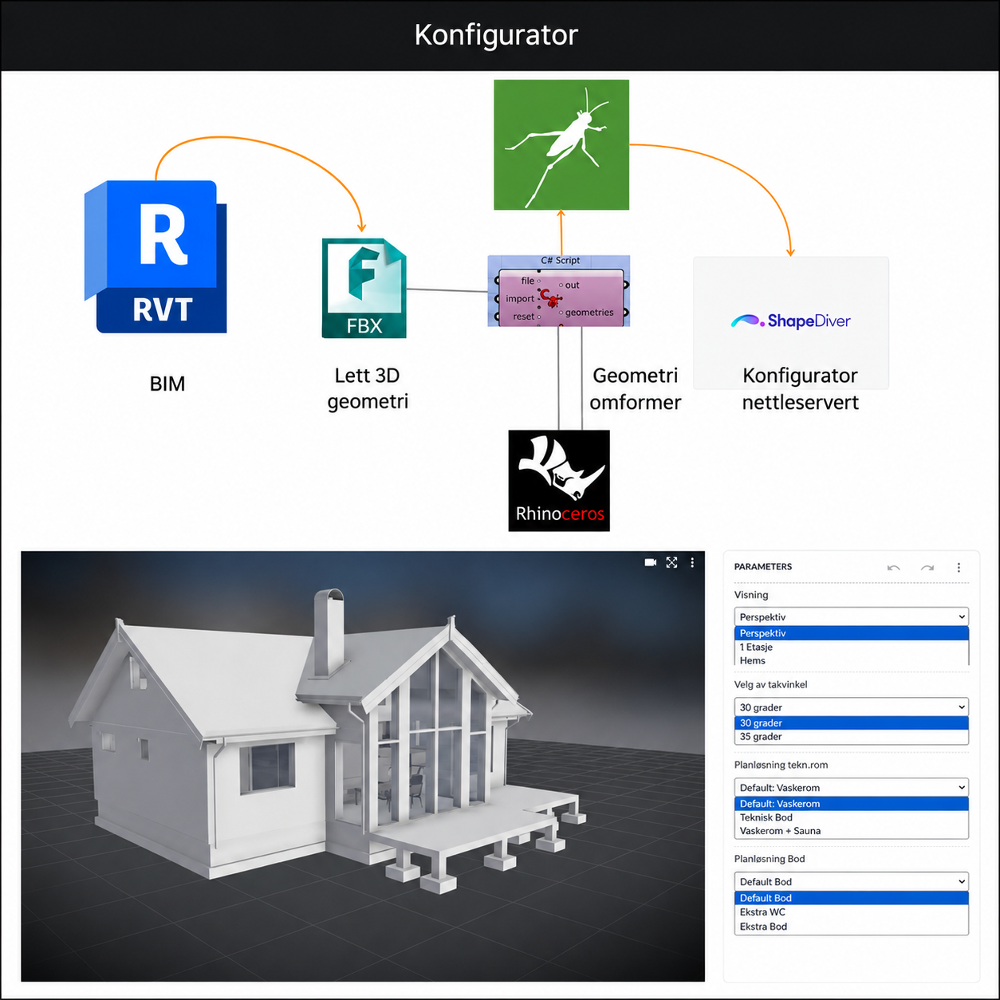

Add your image here'"/>This exploratory project examined how web-based configurators can simplify and personalise the home design and ordering process for both entrepreneurs and clients.
The goal was to create a system akin to an IKEA kitchen planner or a Tesla configurator — a tool enabling users to define layouts, finishes, and cost parameters interactively, thereby enhancing both sales and production workflows.
Throughout the study, I tested ShapeDiver through integrations with Grasshopper and Rhino.Inside.Revit. The focus was on understanding user responsiveness, interface design, and the data transfer process between design models and web interfaces.
I evaluated 8+ platforms including ShapeDiver, Rhino.Inside.Revit, Innobrix, Spacio, Paralello, Kitconnect — each assessed for capacity to handle constraints, offer design flexibility, and facilitate user interaction.
These trials provided valuable insights into the existing limitations of digital configurators in architecture, particularly concerning real-time responsiveness, parametric constraints, and the difficulty of translating complex geometries into browser-friendly formats.
The findings offered the company a comprehensive overview of the technological landscape in the market, aiding in the identification of current capabilities and future possibilities for developing interactive, data-driven design tools for mass customisation in housing.